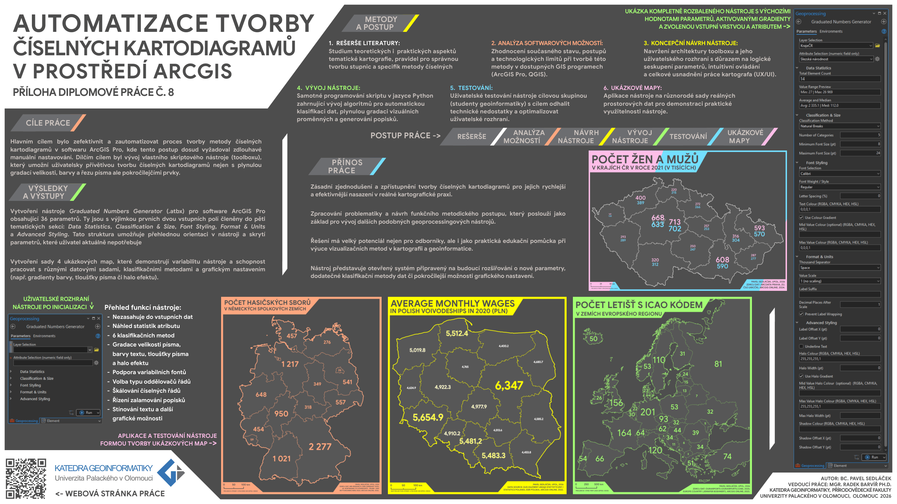
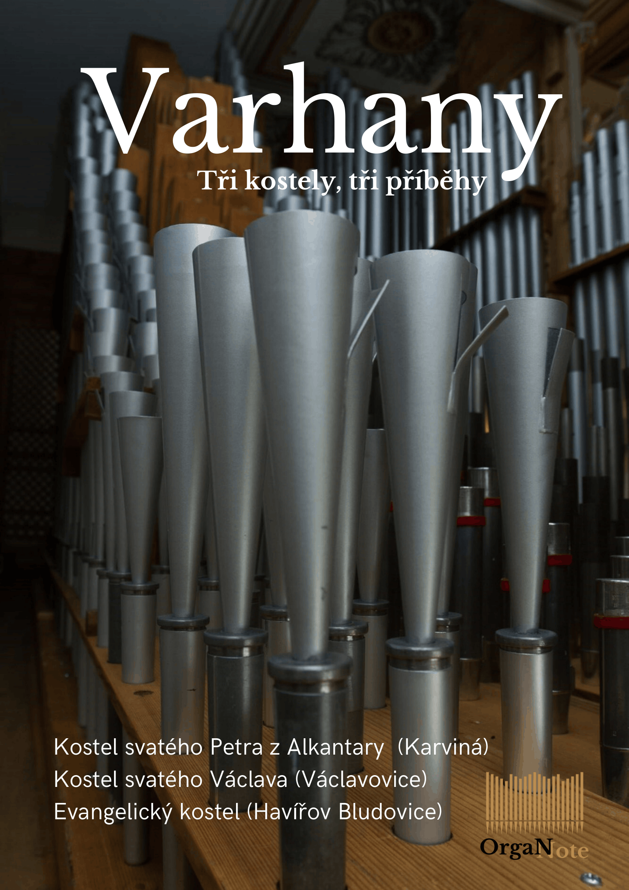
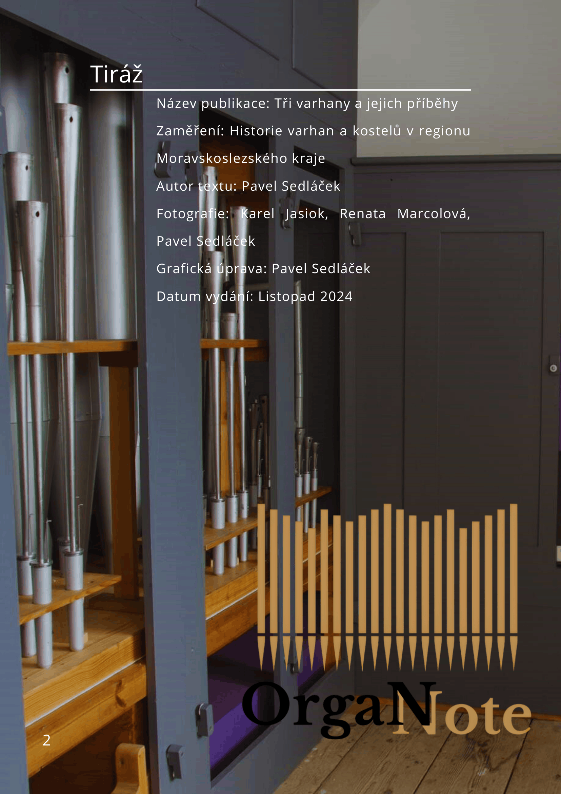
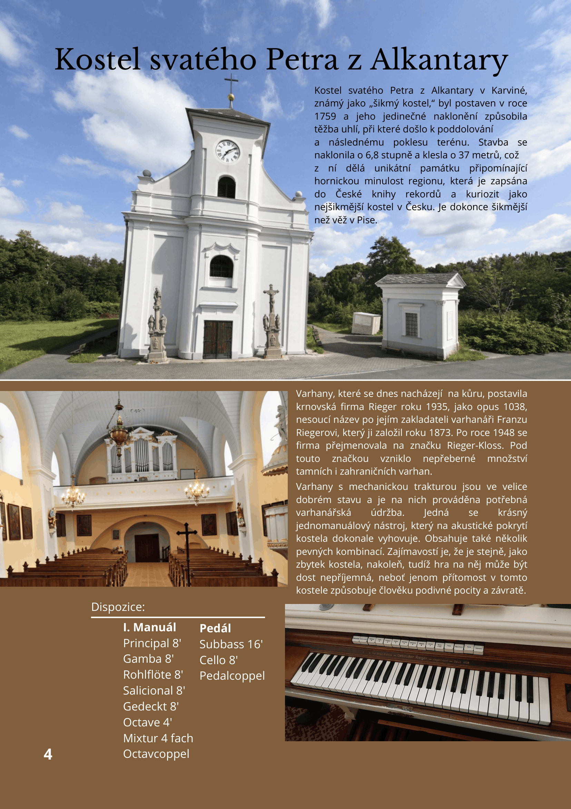
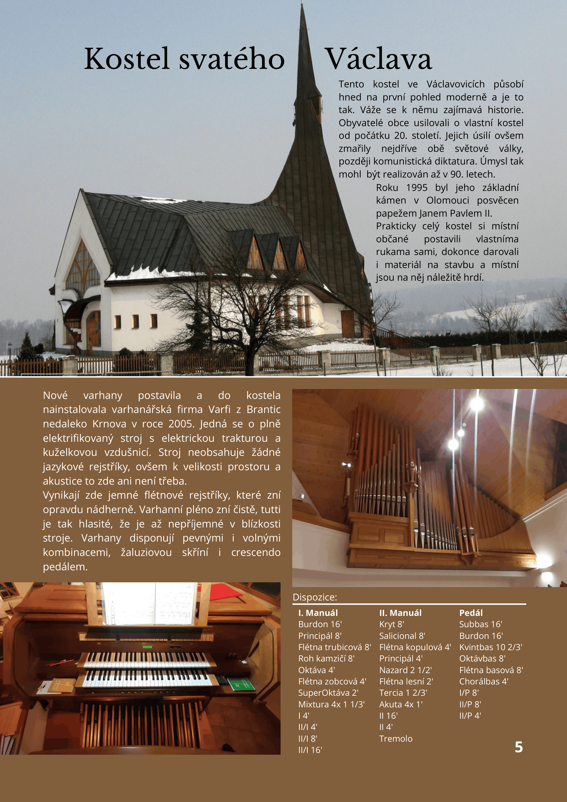
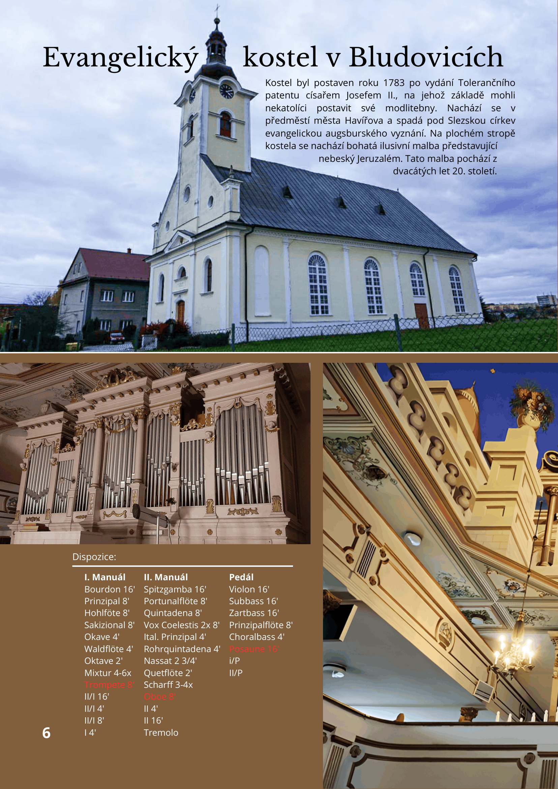
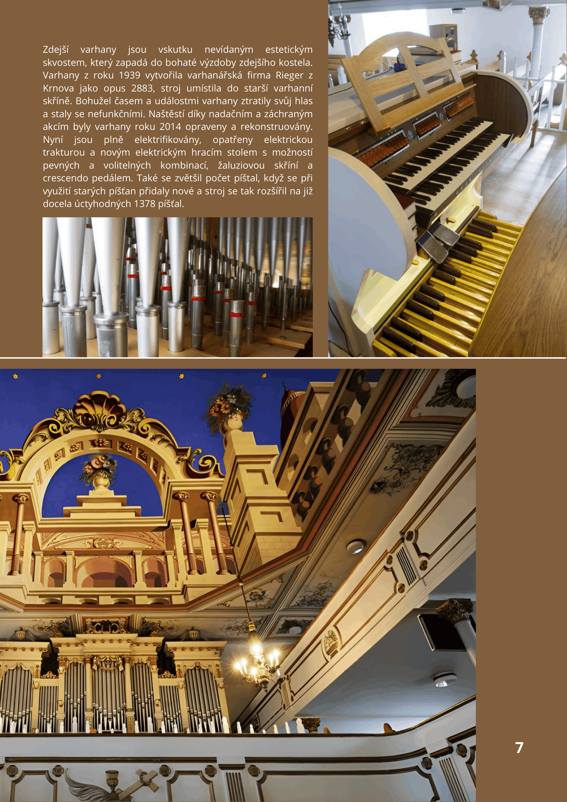
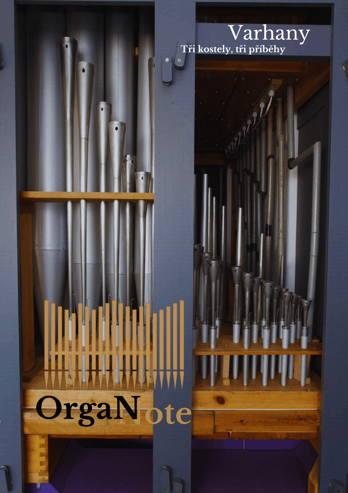

Poster diplomové práce
Poster shrnující automatizaci tvorby číselných kartodiagramů v ArcGIS Pro.
Otevřít PDF
03 / plakáty a tiskoviny
Výběr grafických výstupů pro tisk – od posteru diplomové práce přes plakáty až po vícestránkové brožury.
Poster shrnující automatizaci tvorby číselných kartodiagramů v ArcGIS Pro.
Otevřít PDF
Grafický plakát vytvořený pro akci LK MŠ.

Grafický plakát vytvořený pro město Bohumín.

Grafický návrh skládané brožury – přední a zadní strana.








